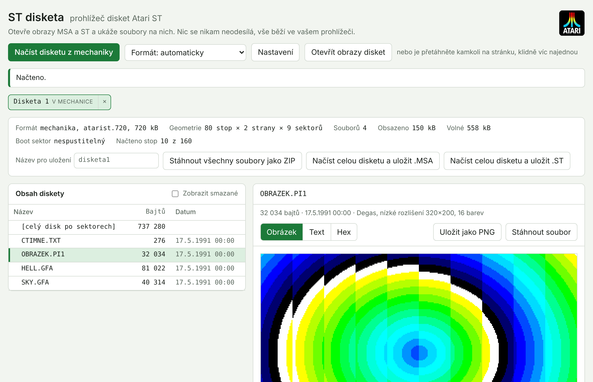
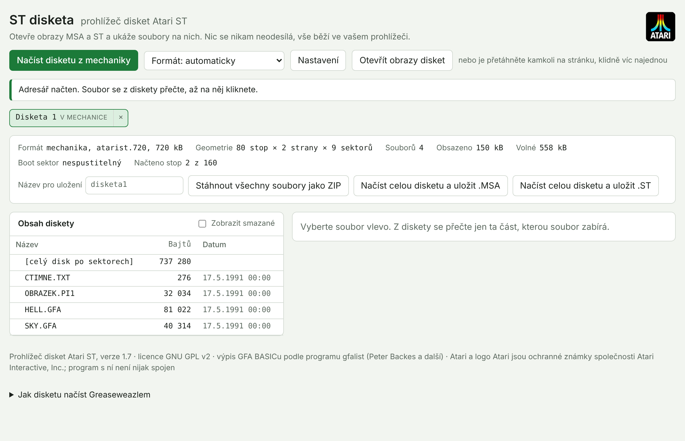
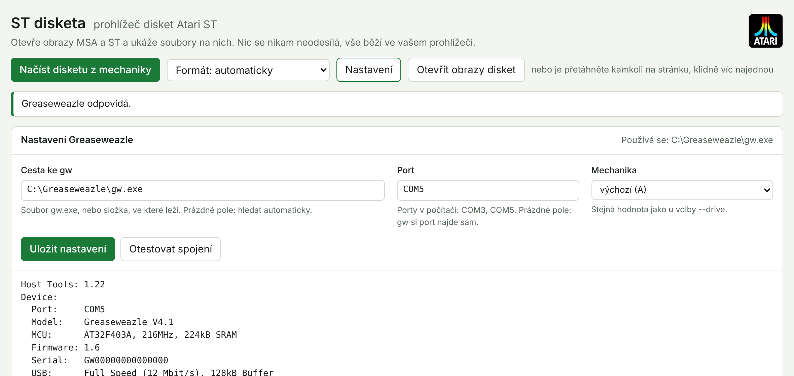
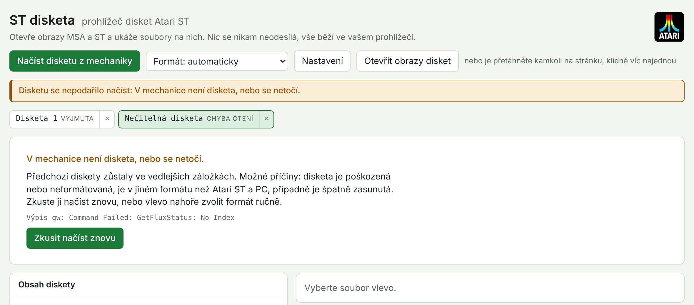

Prohlížeč disket Atari ST přes Greaseweazle Návod k použití

Disketa v mechanice: vlevo adresář, vpravo obrázek přečtený přímo z diskety
Verze · listopad 2026Zdeněk Kotrba · licence GNU GPL v2
Obsah
1Co program dělá
2Co je potřeba
3První spuštění
4Načtení diskety
5Prohlížení souborů
6Programy v GFA BASICu
7Ukládání do počítače
8Nastavení
9Hotové obrazy disket
10Když něco nejde
11Omezení
12Jak to funguje
13Historie verzí
14Licence a poděkování
1Co program dělá
Kdo má krabici disket z Atari ST a Greaseweazle, obvykle každou disketu nejdřív celou převede do souboru
MSA nebo ST a teprve potom se v emulátoru dívá, co na ní je. To trvá, a většinu disket přitom člověk celou nechce.
ST disketa to dělá obráceně. Chová se jako samotné Atari: vložíte disketu a uvidíte její obsah.
Co chcete
Co se z diskety čte
Jak dlouho to trvá
vidět obsah diskety
stopa 0 a stopy s podadresáři
několik sekund
prohlédnout nebo stáhnout jeden soubor
jen stopy, na kterých soubor leží
podle velikosti souboru
obraz celé diskety nebo všechny soubory
zbytek diskety
jako běžné čtení celé diskety
Stopy, které už byly jednou načteny, se nečtou znovu. Když si tedy prohlédnete pár souborů a pak se
rozhodnete uložit celý obraz, dočte se jen to, co chybí.
Soubory se dají rovnou prohlížet: texty, obrázky, hex výpis a programy v GFA BASICu. Emulátor není potřeba.
2Co je potřeba
Věc
Poznámka
Greaseweazle s disketovou mechanikou 3,5"
libovolná verze, kterou umí ovládat program gw
Greaseweazle Tools
program gw.exe (Windows) nebo gw (Linux); ke stažení na github.com/keirf/greaseweazle
Python 3.8 nebo novější
z python.org; žádné další balíčky se neinstalují
webový prohlížeč
Chrome, Edge nebo Firefox
soubor st_disketa.py
celý program je v tomto jediném souboru
Nejdřív si ověřte, že Greaseweazle funguje sám o sobě: příkaz gw info má vypsat model a verzi firmwaru.
3První spuštění
Uložte st_disketa.py kamkoli na disk, třeba do složky s Greaseweazle Tools.
Otevřete v té složce příkazový řádek a spusťte:
python st_disketa.py
Na Windows funguje i py st_disketa.py.
V prohlížeči se otevře stránka http://127.0.0.1:8737/. Okno příkazového řádku nechte otevřené, program v něm běží. Ukončíte ho klávesami Ctrl+C.
Když program gw nenajde, otevře se na stránce rovnou Nastavení. Zadejte cestu ke gw.exe a uložte (kapitola 8).
Klikněte na Otestovat spojení. Má se vypsat model Greaseweazle a verze firmwaru.
Program hledá gw postupně v uloženém nastavení, ve složce vedle sebe a v systémové cestě (PATH).
Stránka při prvním otevření ukazuje malou ukázkovou disketu, na které si můžete ovládání vyzkoušet bez mechaniky.
4Načtení diskety
Vložte disketu do mechaniky.
Klikněte na Načíst disketu z mechaniky.
Nahoře běží hlášení „Čtu boot sektor …“ a „Čtu adresář …“. Po chvíli se vlevo objeví obsah diskety.

Disketa po načtení adresáře. Z diskety jsou zatím přečtené jen 2 stopy ze 160.
Co je na stránce
Část
Význam
pruh s hlášením
co se právě děje; chyby jsou oranžově
záložky disket
každá načtená disketa má svou záložku se značkou „v mechanice“ nebo „vyjmuta“
údaje o disketě
formát, geometrie, jmenovka, počet souborů, volné místo, kolik stop už je načteno
Obsah diskety
adresář; složky se rozbalují a sbalují kliknutím
pravá část
obsah vybraného souboru
Formát diskety
Volba Formát: automaticky přečte boot sektor a podle něj pozná, kolik má disketa stran a sektorů na stopu.
Ručně se formát volí jen tehdy, když boot sektor formát nepopisuje nebo je poškozený.
Volba
Disketa
720 kB
2 strany, 9 sektorů; nejběžnější formát
360 kB
1 strana, 9 sektorů; starší jednostranné diskety
800 kB, 400 kB
10 sektorů na stopu
880 kB, 440 kB
11 sektorů na stopu
Výměna diskety
Vyměňte disketu a znovu klikněte na Načíst disketu z mechaniky. Nová disketa dostane vlastní záložku.
Předchozí záložka zůstane otevřená se značkou „vyjmuta“ a s tím, co se z ní stihlo načíst. Soubory, které jste
si z ní neprohlédli, už dočíst nejdou.
Program nepozná, že jste disketu vyměnili. Po každé výměně proto disketu načtěte znovu,
jinak by se soubory četly podle adresáře předchozí diskety.
5Prohlížení souborů
Klikněte na soubor v adresáři. Z diskety se přečtou stopy, na kterých leží, a soubor se zobrazí vpravo.
Způsob zobrazení program zvolí sám a dá se přepnout tlačítky nad obsahem.
Zobrazení
Kdy se nabídne
Text
vždy; výchozí u textových souborů
Hex
vždy; výchozí u programů a ostatních binárních souborů
Obrázek
Degas (PI1–PI3, komprimované PC1–PC3), NEOchrome (NEO), Doodle (DOO) a jakýkoli soubor o přesně 32 000 bajtech, tedy surová černobílá obrazovka 640 × 400 (například PIC)
Výpis GFA
programy GFA BASIC 3.x (kapitola 6)
Obrázek ve formátu Degas. Pod názvem souboru je velikost, datum a rozpoznaný typ.
Kódování textu
U textu a výpisu GFA je přepínač Kódování. Když se místo háčků a čárek zobrazují jiné znaky, zkuste
postupně Kamenických, Windows-1250 a ISO 8859-2. Výchozí je znaková sada Atari ST.
Další údaje
U programů (PRG, TOS, ACC …) se pod názvem vypíše velikost kódu, dat a BSS.
Zobrazit smazané ukáže i smazané položky adresáře, přeškrtnuté. Jejich obsah nemusí odpovídat,
místo po nich už mohlo být přepsáno.
Řádek [celý disk po sektorech] ukáže hex výpis libovolného sektoru s číslem stopy a strany.
U diskety v mechanice se stopa přečte až po kliknutí na „Načíst stopu“.
6Programy v GFA BASICu
Soubory .GFA jsou uložené ve zkrácené (tokenizované) podobě a běžně se dají přečíst jen
v GFA BASICu. ST disketa je převede na čitelný výpis sama.
Každá procedura a funkce je oddělená linkou. Seznam Přejít na … nad výpisem na ně skočí.
Uložit výpis .LST uloží program jako text, který GFA BASIC načte příkazem Merge.
Přepínač Kódování platí i tady, hodí se u českých textů v řetězcích a komentářích.
Soubor
Co uvidíte
GFA BASIC 3.0, 3.5 a novější
úplný výpis
GFA BASIC 1.x a 2.x
hex výpis a poznámka, že tuto verzi program neumí
program uložený s ochranou (PSAVE)
výpis s náhradními jmény proměnných, např. v2_1A; skutečná jména v souboru nejsou
řádek s daty INLINE
příkaz INLINE a pod ním poznámka s délkou dat
Výpis byl porovnán se sedmi programy, ke kterým existuje originální výpis z GFA BASICu
(přes 5 700 řádků), a vyšel shodně; všechny jsou ve formátu verze 3.5. Starší formát z GFA BASICu 3.0 byl vyzkoušen na jednom programu bez originálu k porovnání. Desetinné konstanty se vypisují na 13 platných číslic.
7Ukládání do počítače
Tlačítko
Co uloží
Co se kvůli tomu čte
Stáhnout soubor
vybraný soubor beze změny
nic navíc, soubor už je načtený
Uložit jako PNG
zobrazený obrázek, 640 × 400 bodů
nic navíc
Uložit výpis .LST
výpis programu v GFA BASICu
nic navíc
Stáhnout všechny soubory jako ZIP
všechny soubory i se složkami a původními daty
stopy se soubory
Načíst celou disketu a uložit .MSA
obraz diskety ve formátu MSA
všechny zbývající stopy
Načíst celou disketu a uložit .ST
obraz diskety ve formátu ST
všechny zbývající stopy
Soubory se ukládají tam, kam váš prohlížeč ukládá stažené soubory. Do pole Název pro uložení napište
jméno, pod kterým se má uložit obraz a ZIP. Předvyplní se jmenovka diskety, pokud nějakou má.
Při čtení celé diskety ukazuje údaj Načteno stop, jak daleko čtení je.
Když jsou na disketě nečitelné sektory, objeví se oranžová poznámka s čísly stop.
Obraz se uloží i tak, vadné sektory v něm ale nejsou platná data. Takový obraz si označte.
8Nastavení
Tlačítko Nastavení otevře panel se třemi údaji. Po změně klikněte na Uložit nastavení.

Nastavení s výsledkem testu spojení
Pole
Co zadat
Cesta ke gw
soubor gw.exe nebo složku, ve které leží, např. C:\Greaseweazle\gw.exe. Prázdné pole: program hledá sám.
Port
sériový port Greaseweazle, např. COM5 nebo /dev/ttyACM0. Pod polem jsou vypsané porty nalezené v počítači. Prázdné pole: gw si port najde sám.
Mechanika
stejná hodnota jako volba --drive programu gw: A nebo B u kabelu pro PC, 0 až 2 u zapojení Shugart.
Otestovat spojení spustí gw info a ukáže jeho výpis. Test používá uložené hodnoty,
proto nejdřív uložte.
Nastavení se ukládá do souboru .st_disketa.json ve vaší domovské složce a při dalším spuštění
se načte samo.
Volby na příkazové řádce
Nejsou nutné. Když je použijete, mají přednost před uloženým nastavením.
Volba
Význam
--gw CESTA
cesta ke gw
--device PORT
sériový port
--drive X
mechanika
--port ČÍSLO
port místní stránky, výchozí 8737
--no-browser
neotevírat prohlížeč
9Hotové obrazy disket
Obrazy .MSA a .ST, které už máte, se dají prohlížet stejně jako disketa v mechanice.
Klikněte na Otevřít obrazy disket, nebo soubory přetáhněte kamkoli na stránku. Můžete jich vybrat víc
najednou, každý dostane svou záložku.
Obraz MSA se dá tlačítkem Uložit jako obraz .ST převést na ST.
K prohlížení obrazů není potřeba Greaseweazle ani Python: stačí v prohlížeči otevřít soubor
st_prohlizec.html, který je součástí projektu.
Hex výpis souboru
10Když něco nejde
Když se disketa nepodaří načíst, otevře se záložka Nečitelná disketa s důvodem a s posledními řádky
výpisu programu gw.

Neúspěšné čtení: důvod, výpis gw a tlačítko pro nový pokus
Hlášení nebo projev
Co s tím
Program gw nebyl nalezen
v Nastavení zadejte cestu ke gw.exe a uložte
Greaseweazle nebyl nalezen
zkontrolujte USB kabel; v Nastavení zadejte port; vyzkoušejte gw info
K portu není přístup
Windows: zavřete jiný program, který port používá. Linux: přidejte se do skupiny dialout a přihlaste se znovu.
V mechanice není disketa, nebo se netočí
zasuňte disketu až na doraz; zkontrolujte napájení mechaniky a volbu Mechanika
Mechanika nenašla stopu 0
špatně zvolená mechanika (A/B) nebo otočený kabel
Na první stopě se nepodařilo přečíst žádný sektor
disketa je poškozená, neformátovaná nebo v jiném formátu (Amiga, Mac). Zkuste nový pokus, případně očistit hlavy.
Souborový systém TOS/FAT nenalezen
hra s vlastním formátem nebo poškozený boot sektor; obsah lze projít po sektorech
Boot sektor nepopisuje formát diskety
zvolte formát ručně a načtěte disketu znovu
Nečitelné sektory na stopách …
zkuste soubor načíst znovu; někdy pomůže disketu vyjmout a vložit
Pomocný program neodpovídá
okno s st_disketa.py bylo zavřeno; spusťte program znovu a obnovte stránku
Adresář vypadá jako z jiné diskety
po výměně diskety jste ji nenačetli znovu
11Omezení
Čte se nejvýš 80 stop na stranu. Diskety formátované na 81 nebo 82 stop se nenačtou celé.
Diskety s ochranou proti kopírování a hry s vlastním formátem nemají adresář. Na jejich archivaci
použijte přímo gw read s výstupem do formátu SCP nebo HFE.
Diskety s vysokou hustotou (1,44 MB) program nenabízí.
Na disketu se nezapisuje, program jen čte.
Výpis GFA BASICu neumí soubory z GFA BASICu 1.x a 2.x.
Stránka je jen česky.
Na Linuxu program se skutečnou mechanikou zatím vyzkoušen nebyl.
12Jak to funguje
st_disketa.py spustí malý webový server, který poslouchá jen na adrese 127.0.0.1,
tedy jen pro váš počítač. Stránka v prohlížeči mu posílá požadavky na konkrétní stopy.
Stránka si vyžádá stopu 0. Server spustí gw read --format=atarist.720 --tracks=c=0:h=0.
Z boot sektoru stránka zjistí formát a spočítá, kde leží tabulka FAT a kořenový adresář. Na běžné
disketě 720 kB zabírají přesně obě strany stopy 0.
Pro každý podadresář si vyžádá stopy, na kterých leží.
Po kliknutí na soubor projde podle tabulky FAT jeho clustery, převede je na čísla stop a vyžádá si ty,
které ještě nemá.
Rozbor souborového systému, formátu MSA, obrázků i GFA BASICu dělá stránka sama. Mimo váš počítač se
nic neodesílá.
13Historie verzí
Číslo verze je vidět dole na stránce, v souboru st_disketa.py a v názvu tohoto návodu.
Verze
Co se změnilo
1.7
Logo Atari na stránce a jako ikona záložky, název programu v nadpisu a titulku.
1.6
Surové černobílé obrazovky 640 × 400 (například .PIC) se zobrazí jako obrázek. Obrázky Degas a NEOchrome se poznají i podle velikosti.
1.5
První zveřejněná verze. Oprava: programy z GFA BASICu 3.0 se zobrazovaly jen jako nečitelný text, teď se vypíší.
1.4
Číslo verze na stránce, samostatný st_prohlizec.html, zdroje ve složce src/, návod v PDF.
1.3
Oprava: při nečitelné disketě zůstával zobrazený obsah té předchozí. Nová záložka „Nečitelná disketa“, hlášení nahoře, druhý důkladnější pokus o čtení. Barevný výpis GFA s čísly řádků a skokem na procedury.
1.2
Výpis programů GFA BASIC 3.x a uložení jako .LST. Licence změněna na GNU GPL v2.
1.1
Nastavení cesty ke gw, portu a mechaniky přímo na stránce, test spojení, seznam portů.
1.0
Čtení diskety přímo z mechaniky: adresář, soubor po kliknutí, obraz na požádání. Prohlížení obrazů MSA a ST, text, hex, obrázky.
14Licence a poděkování
Program je volně šiřitelný pod licencí GNU General Public License verze 2 a je bez jakékoli záruky.
Plné znění licence je v souboru LICENSE.